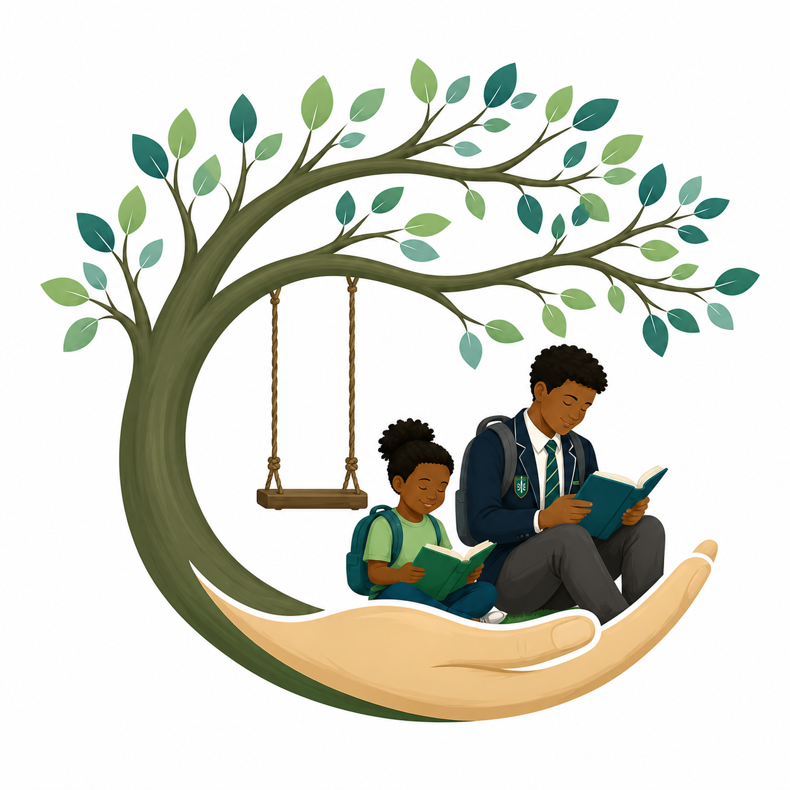
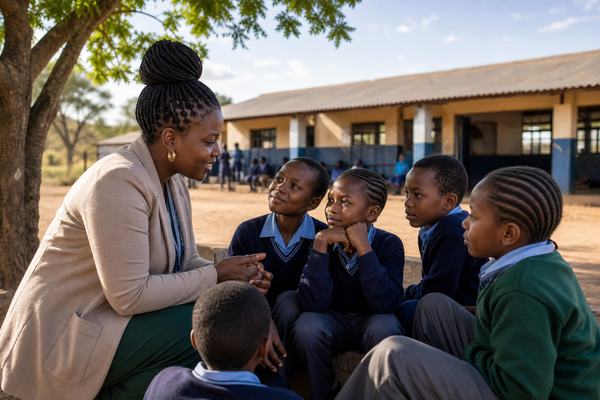
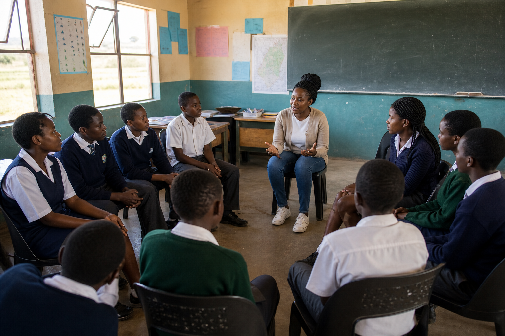
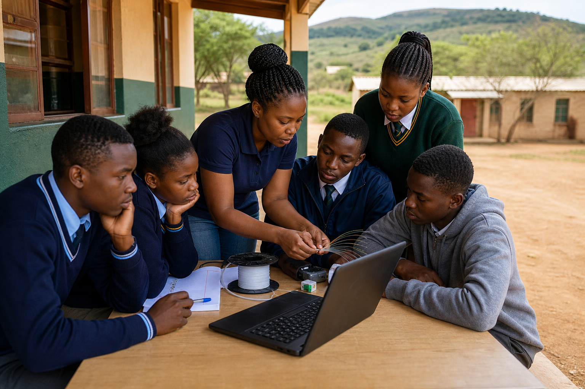

Tsireledzo
Main Member, Social Worker, PhD Candidate
Leads the organisation's school social work mission, learner support, and anti-bullying intervention work.

Tsireledzo CareNurturing Growth
Tsireledzo Care is a female-led NPC creating safer school communities through social work interventions, psychosocial support, life skills education, and youth empowerment pathways into meaningful work.

Every child deserves a safe environment to grow.
About Tsireledzo Care
Headed in the Thulamela region of Limpopo, this female-led organisation exists to address bullying among learners in school settings by providing social work interventions and psychosocial support. It also supports learners identified as bullying perpetrators with life skills education that builds conflict resolution, critical thinking, self-awareness, and problem solving.

Female-Led Leadership
Main Member, Social Worker, PhD Candidate
Leads the organisation's school social work mission, learner support, and anti-bullying intervention work.
Accounting Student
Supports financial discipline, record keeping, and the transparent governance needed for a trusted NPC.
Social Worker
Strengthens learner care, family engagement, and practical support for safer school environments.
Objectives
Identify and address bullying, drug and alcohol abuse, teenage pregnancy, poverty, and biopsychosocial challenges that affect learners in basic education.
Provide family preservation, restoration, and support through life skills programmes, psychosocial interventions, conflict resolution, and learner care.
Support school dropouts to return to school institutions and reconnect with learning, mentoring, and practical education support.
Mobilise stakeholders and resources to improve basic education outcomes across the communities Tsireledzo Care serves.
Connect youth to skills development and job training opportunities through partnerships that open practical pathways after school.
Host fun walks, sports days, career days, and motivational talks that promote positive citizenship and safer community relationships.
Provide academic coaching and mentoring to help learners improve confidence, performance, and education outcomes.


Constitution
Tsireledzo Care, shortened as Tsire Care, is constituted as an organisation with its own legal identity. It exists separately from its members, can own property, can sue and be sued in its own name, and continues even when membership or office bearers change.
The organisation is overseen by three office bearers who act as the Board of governance. Office bearers serve three-year terms and may stand for re-election for as long as their services are needed.
The Board may raise funds, receive contributions, acquire property, make by-laws, and form sub-committees where needed, provided its decisions support the objectives and comply with South African law.
Annual General Meetings report on the year's work, consider policy, elect office bearers, and approve changes where needed. Ordinary meetings are held quarterly, and decisions are made by consensus or majority vote.
The organisation keeps records of everything it owns. Its money or property may not be distributed to members or office bearers except as reasonable payment for work performed or reimbursement of approved expenses.
Constitution changes and dissolution require a two-thirds member resolution. If the organisation winds up, debts must be paid and remaining assets must go to another nonprofit organisation with similar objectives.
Support Us
Your support can help this female-led NPC fund school social work interventions, psychosocial support, learner workshops, mentorship, and training pathways that reduce unemployment, crime, and alcohol abuse.
Contact
Reach out if you need support, want to collaborate, or would like to help the mission of this female-led NPC grow.